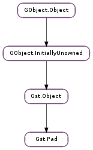

| Subclasses: | Gst.ProxyPad |
|---|
| Name | Type | Flags | Description |
|---|---|---|---|
| caps | Gst.Caps | r | The capabilities of the pad |
| direction | Gst.PadDirection | r/w/c | The direction of the pad |
| template | Gst.PadTemplate | r/w | The Gst.PadTemplate of this pad |
| Name | Parameters | Return | Description |
|---|---|---|---|
| linked | Gst.Pad | Signals that a pad has been linked to the peer pad. | |
| unlinked | Gst.Pad | Signals that a pad has been unlinked from the peer pad. |
| Name | Type | Access |
|---|---|---|
| block_cond | GLib.Cond | r |
| direction | Gst.PadDirection | r |
| mode | Gst.PadMode | r |
| num_blocked | int | r |
| num_probes | int | r |
| object | Gst.Object | r |
| offset | int | r |
| padtemplate | Gst.PadTemplate | r |
| peer | Gst.Pad | r |
| probes | GLib.HookList | r |
| stream_rec_lock | GLib.RecMutex | r |
| task | Gst.Task | r |
Bases: Gst.Object
A Gst.Element is linked to other elements via “pads”, which are extremely light-weight generic link points.
Pads have a Gst.PadDirection, source pads produce data, sink pads consume data.
Pads are typically created from a Gst.PadTemplate with Gst.Pad.new_from_template () and are then added to a Gst.Element. This usually happens when the element is created but it can also happen dynamically based on the data that the element is processing or based on the pads that the application requests.
Pads without pad templates can be created with Gst.Pad.new (), which takes a direction and a name as an argument. If the name is None, then a guaranteed unique name will be assigned to it.
A Gst.Element creating a pad will typically use the various gst_pad_set_*_function() calls to register callbacks for events, queries or dataflow on the pads.
gst_pad_get_parent() will retrieve the Gst.Element that owns the pad.
After two pads are retrieved from an element with gst_element_get_pad(), the pads can be linked with Gst.Pad.link (). (For quick links, you can also use Gst.Element.link (), which will make the obvious link for you if it’s straightforward.). Pads can be unlinked again with Gst.Pad.unlink (). Gst.Pad.get_peer () can be used to check what the pad is linked to.
Before dataflow is possible on the pads, they need to be activated with Gst.Pad.set_active ().
Gst.Pad.query () and Gst.Pad.peer_query () can be used to query various properties of the pad and the stream.
To send a Gst.Event on a pad, use Gst.Pad.send_event () and Gst.Pad.push_event (). Some events will be sticky on the pad, meaning that after they pass on the pad they can be queried later with Gst.Pad.get_sticky_event () and Gst.Pad.sticky_events_foreach (). Gst.Pad.get_current_caps () and Gst.Pad.has_current_caps () are convenience functions to query the current sticky CAPS event on a pad.
GstElements will use Gst.Pad.push () and Gst.Pad.pull_range () to push out or pull in a buffer.
The dataflow, events and queries that happen on a pad can be monitored with probes that can be installed with Gst.Pad.add_probe (). Gst.Pad.is_blocked () can be used to check if a block probe is installed on the pad. Gst.Pad.is_blocking () checks if the blocking probe is currently blocking the pad. Gst.Pad.remove_probe () is used to remove a previously installed probe and unblock blocking probes if any.
Pad have an offset that can be retrieved with Gst.Pad.get_offset (). This offset will be applied to the running_time of all data passing over the pad. Gst.Pad.set_offset () can be used to change the offset.
Convenience functions exist to start, pause and stop the task on a pad with Gst.Pad.start_task (), Gst.Pad.pause_task () and Gst.Pad.stop_task () respectively.
Last reviewed on 2012-03-29 (0.11.3)
| Parameters: |
|
|---|---|
| Returns: | |
| Return type: |
Creates a new pad with the given name in the given direction. If name is None, a guaranteed unique name (across all pads) will be assigned. This function makes a copy of the name so you can safely free the name.
| Parameters: |
|
|---|---|
| Returns: | |
| Return type: |
Creates a new pad with the given name from the given static template. If name is None, a guaranteed unique name (across all pads) will be assigned. This function makes a copy of the name so you can safely free the name.
| Parameters: |
|
|---|---|
| Returns: | |
| Return type: |
Creates a new pad with the given name from the given template. If name is None, a guaranteed unique name (across all pads) will be assigned. This function makes a copy of the name so you can safely free the name.
| Parameters: |
|
|---|---|
| Returns: | True if the operation was successful. MT safe. |
| Return type: |
Activates or deactivates the given pad in mode via dispatching to the pad’s activatemodefunc. For use from within pad activation functions only.
If you don’t know what this is, you probably don’t want to call it.
| Parameters: |
|
|---|---|
| Returns: | an id or 0 on error. The id can be used to remove the probe with Gst.Pad.remove_probe (). MT safe. |
| Return type: |
Be notified of different states of pads. The provided callback is called for every state that matches mask.
| Parameters: | sinkpad (Gst.Pad) – the sink Gst.Pad. |
|---|---|
| Returns: | True if the pads can be linked. |
| Return type: | bool |
Checks if the source pad and the sink pad are compatible so they can be linked.
| Parameters: | buffer (Gst.Buffer) – the Gst.Buffer to send, return Gst.FlowReturn.ERROR if not. |
|---|---|
| Returns: | a Gst.FlowReturn from the pad. MT safe. |
| Return type: | Gst.FlowReturn |
Chain a buffer to pad.
The function returns Gst.FlowReturn.FLUSHING if the pad was flushing.
If the buffer type is not acceptable for pad (as negotiated with a preceeding Gst.EventType.CAPS event), this function returns Gst.FlowReturn.NOT_NEGOTIATED.
The function proceeds calling the chain function installed on pad (see gst_pad_set_chain_function()) and the return value of that function is returned to the caller. Gst.FlowReturn.NOT_SUPPORTED is returned if pad has no chain function.
In all cases, success or failure, the caller loses its reference to buffer after calling this function.
| Parameters: | list (Gst.BufferList) – the Gst.BufferList to send, return Gst.FlowReturn.ERROR if not. |
|---|---|
| Returns: | a Gst.FlowReturn from the pad. |
| Return type: | Gst.FlowReturn |
Chain a bufferlist to pad.
The function returns Gst.FlowReturn.FLUSHING if the pad was flushing.
If pad was not negotiated properly with a CAPS event, this function returns Gst.FlowReturn.NOT_NEGOTIATED.
The function proceeds calling the chainlist function installed on pad (see gst_pad_set_chain_list_function()) and the return value of that function is returned to the caller. Gst.FlowReturn.NOT_SUPPORTED is returned if pad has no chainlist function.
In all cases, success or failure, the caller loses its reference to list after calling this function.
MT safe.
| Returns: | True is the Gst.PadFlags.NEED_RECONFIGURE flag was set on pad. |
|---|---|
| Return type: | bool |
Check and clear the Gst.PadFlags.NEED_RECONFIGURE flag on pad and return True if the flag was set.
| Parameters: |
|
|---|---|
| Returns: | A stream-id for pad. GLib.free () after usage. |
| Return type: |
Creates a stream-id for the source Gst.Pad pad by combining the upstream information with the optional stream_id of the stream of pad. pad must have a parent Gst.Element and which must have zero or one sinkpad. stream_id can only be None if the parent element of pad has only a single source pad.
This function generates an unique stream-id by getting the upstream stream-start event stream ID and appending stream_id to it. If the element has no sinkpad it will generate an upstream stream-id by doing an URI query on the element and in the worst case just uses a random number. Source elements that don’t implement the URI handler interface should ideally generate a unique, deterministic stream-id manually instead.
Since stream IDs are sorted alphabetically, any numbers in the stream ID should be printed with a fixed number of characters, preceded by 0’s, such as by using the format \%03u instead of \%u.
| Parameters: |
|
|---|---|
| Returns: | True if the event was sent successfully. |
| Return type: |
Invokes the default event handler for the given pad.
The EOS event will pause the task associated with pad before it is forwarded to all internally linked pads,
The the event is sent to all pads internally linked to pad. This function takes ownership of event.
| Parameters: |
|
|---|---|
| Returns: | |
| Return type: |
Calls forward for all internally linked pads of pad. This function deals with dynamically changing internal pads and will make sure that the forward function is only called once for each pad.
When forward returns True, no further pads will be processed.
| Returns: | the allowed Gst.Caps of the pad link. Unref the caps when you no longer need it. This function returns None when pad has no peer. MT safe. |
|---|---|
| Return type: | Gst.Caps |
Gets the capabilities of the allowed media types that can flow through pad and its peer.
The allowed capabilities is calculated as the intersection of the results of calling Gst.Pad.query_caps () on pad and its peer. The caller owns a reference on the resulting caps.
| Returns: | the current caps of the pad with incremented ref-count. |
|---|---|
| Return type: | Gst.Caps |
Gets the capabilities currently configured on pad with the last Gst.EventType.CAPS event.
| Returns: | the Gst.PadDirection of the pad. MT safe. |
|---|---|
| Return type: | Gst.PadDirection |
Gets the direction of the pad. The direction of the pad is decided at construction time so this function does not take the LOCK.
| Returns: | a object to the private data. |
|---|---|
| Return type: | int |
Gets the private data of a pad. No locking is performed in this function.
| Returns: | the offset. |
|---|---|
| Return type: | int |
Get the offset applied to the running time of pad. pad has to be a source pad.
| Returns: | the Gst.PadTemplate from which this pad was instantiated, or None if this pad has no template. Unref after usage. |
|---|---|
| Return type: | Gst.PadTemplate |
Gets the template for pad.
| Returns: | the Gst.Caps of this pad template. Unref after usage. |
|---|---|
| Return type: | Gst.Caps |
Gets the capabilities for pad ‘s template.
| Returns: | the parent of the pad. The caller has a reference on the parent, so unref when you’re finished with it. MT safe. |
|---|---|
| Return type: | Gst.Element |
Gets the parent of pad, cast to a Gst.Element. If a pad has no parent or its parent is not an element, return None.
| Returns: | the peer Gst.Pad. Unref after usage. MT safe. |
|---|---|
| Return type: | Gst.Pad |
Gets the peer of pad. This function refs the peer pad so you need to unref it after use.
| Parameters: | |
|---|---|
| Returns: | a Gst.FlowReturn from the pad. MT safe. |
| Return type: | Gst.FlowReturn, buffer: Gst.Buffer |
When pad is flushing this function returns Gst.FlowReturn.FLUSHING immediately and buffer is None.
Calls the getrange function of pad, see Gst.PadGetRangeFunction for a description of a getrange function. If pad has no getrange function installed (see gst_pad_set_getrange_function()) this function returns Gst.FlowReturn.NOT_SUPPORTED.
If buffer points to a variable holding None, a valid new Gst.Buffer will be placed in buffer when this function returns Gst.FlowReturn.OK. The new buffer must be freed with gst_buffer_unref() after usage.
When buffer points to a variable that points to a valid Gst.Buffer, the buffer will be filled with the result data when this function returns Gst.FlowReturn.OK. If the provided buffer is larger than size, only size bytes will be filled in the result buffer and its size will be updated accordingly.
Note that less than size bytes can be returned in buffer when, for example, an EOS condition is near or when buffer is not large enough to hold size bytes. The caller should check the result buffer size to get the result size.
When this function returns any other result value than Gst.FlowReturn.OK, buffer will be unchanged.
This is a lowlevel function. Usualy Gst.Pad.pull_range () is used.
| Parameters: |
|
|---|---|
| Returns: | a Gst.Event of type event_type or None when no event of event_type was on pad. Unref after usage. |
| Return type: |
Returns a new reference of the sticky event of type event_type from the event.
| Returns: | a newly-allocated copy of the stream-idfor pad, or None. GLib.free () the returned string when no longer needed. |
|---|---|
| Return type: | str |
Returns the current stream-id for the pad, or None if none has been set yet, i.e. the pad has not received a stream-start event yet.
This is a convenience wrapper around Gst.Pad.get_sticky_event () and Gst.Event.parse_stream_start ().
The returned stream-id string should be treated as an opaque string, its contents should not be interpreted.
| Returns: | True when pad has caps associated with it. |
|---|---|
| Return type: | bool |
Check if pad has caps set on it with a Gst.EventType.CAPS event.
| Returns: | True if the pad is blocked. MT safe. |
|---|---|
| Return type: | bool |
Checks if the pad is blocked or not. This function returns the last requested state of the pad. It is not certain that the pad is actually blocking at this point (see Gst.Pad.is_blocking ()).
| Returns: | True if the pad is blocking. MT safe. |
|---|---|
| Return type: | bool |
Checks if the pad is blocking or not. This is a guaranteed state of whether the pad is actually blocking on a Gst.Buffer or a Gst.Event.
| Returns: | True if the pad is linked, False otherwise. MT safe. |
|---|---|
| Return type: | bool |
Checks if a pad is linked to another pad or not.
| Returns: | a new Gst.Iterator of Gst.Pad or None when the pad does not have an iterator function configured. Use Gst.Iterator.free () after usage. |
|---|---|
| Return type: | Gst.Iterator |
Gets an iterator for the pads to which the given pad is linked to inside of the parent element.
Each Gst.Pad element yielded by the iterator will have its refcount increased, so unref after use.
Free-function: Gst.Iterator.free
| Parameters: | parent (Gst.Object or None) – the parent of pad or None |
|---|---|
| Returns: | a Gst.Iterator of Gst.Pad, or None if pad has no parent. Unref each returned pad with Gst.Object.unref (). |
| Return type: | Gst.Iterator |
Iterate the list of pads to which the given pad is linked to inside of the parent element. This is the default handler, and thus returns an iterator of all of the pads inside the parent element with opposite direction.
The caller must free this iterator after use with Gst.Iterator.free ().
| Parameters: | sinkpad (Gst.Pad) – the sink Gst.Pad to link. |
|---|---|
| Returns: | A result code indicating if the connection worked or what went wrong. MT Safe. |
| Return type: | Gst.PadLinkReturn |
Links the source pad and the sink pad.
| Parameters: |
|
|---|---|
| Returns: | A result code indicating if the connection worked or what went wrong. |
| Return type: |
Links the source pad and the sink pad.
This variant of Gst.Pad.link provides a more granular control on the checks being done when linking. While providing some considerable speedups the caller of this method must be aware that wrong usage of those flags can cause severe issues. Refer to the documentation of Gst.PadLinkCheck for more information.
MT Safe.
Mark a pad for needing reconfiguration. The next call to Gst.Pad.check_reconfigure () will return True after this call.
| Returns: | True is the Gst.PadFlags.NEED_RECONFIGURE flag is set on pad. |
|---|---|
| Return type: | bool |
Check the Gst.PadFlags.NEED_RECONFIGURE flag on pad and return True if the flag was set.
| Returns: | a True if the task could be paused or False when the pad has no task. |
|---|---|
| Return type: | bool |
Pause the task of pad. This function will also wait until the function executed by the task is finished if this function is not called from the task function.
| Parameters: | query (Gst.Query) – the Gst.Query to perform. |
|---|---|
| Returns: | True if the query could be performed. This function returns False if pad has no peer. |
| Return type: | bool |
Performs Gst.Pad.query () on the peer of pad.
The caller is responsible for both the allocation and deallocation of the query structure.
| Parameters: | caps (Gst.Caps) – a Gst.Caps to check on the pad |
|---|---|
| Returns: | True if the peer of pad can accept the caps or pad has no peer. |
| Return type: | bool |
Check if the peer of pad accepts caps. If pad has no peer, this function returns True.
| Parameters: | filter (Gst.Caps or None) – a Gst.Caps filter, or None. |
|---|---|
| Returns: | the caps of the peer pad with incremented ref-count. When there is no peer pad, this function returns filter or, when filter is None, ANY caps. |
| Return type: | Gst.Caps |
Gets the capabilities of the peer connected to this pad. Similar to Gst.Pad.query_caps ().
When called on srcpads filter contains the caps that upstream could produce in the order preferred by upstream. When called on sinkpads filter contains the caps accepted by downstream in the preffered order. filter might be None but if it is not None the returned caps will be a subset of filter.
| Parameters: |
|
|---|---|
| Returns: | True if the query could be performed. |
| Return type: |
Queries the peer pad of a given sink pad to convert src_val in src_format to dest_format.
| Parameters: | format (Gst.Format) – the Gst.Format requested |
|---|---|
| Returns: | True if the query could be performed. |
| Return type: | bool, duration: int |
Queries the peer pad of a given sink pad for the total stream duration.
| Parameters: | format (Gst.Format) – the Gst.Format requested |
|---|---|
| Returns: | True if the query could be performed. |
| Return type: | bool, cur: int |
Queries the peer of a given sink pad for the stream position.
| Parameters: | query (Gst.Query) – an ACCEPT_CAPS Gst.Query. |
|---|---|
| Returns: | True if query could be executed |
| Return type: | bool |
Calls gst_pad_accept_caps() for all internally linked pads of pad and returns the intersection of the results.
This function is useful as a default accept caps query function for an element that can handle any stream format, but requires caps that are acceptable for all oposite pads.
| Parameters: | query (Gst.Query) – a CAPS Gst.Query. |
|---|---|
| Returns: | True if query could be executed |
| Return type: | bool |
Calls Gst.Pad.query_caps () for all internally linked pads fof pad and returns the intersection of the results.
This function is useful as a default caps query function for an element that can handle any stream format, but requires all its pads to have the same caps. Two such elements are tee and adder.
| Parameters: | |
|---|---|
| Returns: | a Gst.FlowReturn from the peer pad. MT safe. |
| Return type: | Gst.FlowReturn, buffer: Gst.Buffer |
Pulls a buffer from the peer pad or fills up a provided buffer.
This function will first trigger the pad block signal if it was installed.
When pad is not linked Gst.FlowReturn.NOT_LINKED is returned else this function returns the result of Gst.Pad.get_range () on the peer pad. See Gst.Pad.get_range () for a list of return values and for the semantics of the arguments of this function.
If buffer points to a variable holding None, a valid new Gst.Buffer will be placed in buffer when this function returns Gst.FlowReturn.OK. The new buffer must be freed with gst_buffer_unref() after usage. When this function returns any other result value, buffer will still point to None.
When buffer points to a variable that points to a valid Gst.Buffer, the buffer will be filled with the result data when this function returns Gst.FlowReturn.OK. When this function returns any other result value, buffer will be unchanged. If the provided buffer is larger than size, only size bytes will be filled in the result buffer and its size will be updated accordingly.
Note that less than size bytes can be returned in buffer when, for example, an EOS condition is near or when buffer is not large enough to hold size bytes. The caller should check the result buffer size to get the result size.
| Parameters: | buffer (Gst.Buffer) – the Gst.Buffer to push returns Gst.FlowReturn.ERROR if not. |
|---|---|
| Returns: | a Gst.FlowReturn from the peer pad. MT safe. |
| Return type: | Gst.FlowReturn |
Pushes a buffer to the peer of pad.
This function will call installed block probes before triggering any installed data probes.
The function proceeds calling Gst.Pad.chain () on the peer pad and returns the value from that function. If pad has no peer, Gst.FlowReturn.NOT_LINKED will be returned.
In all cases, success or failure, the caller loses its reference to buffer after calling this function.
| Parameters: | event (Gst.Event) – the Gst.Event to send to the pad. |
|---|---|
| Returns: | True if the event was handled. MT safe. |
| Return type: | bool |
Sends the event to the peer of the given pad. This function is mainly used by elements to send events to their peer elements.
This function takes owership of the provided event so you should gst_event_ref() it if you want to reuse the event after this call.
| Parameters: | list (Gst.BufferList) – the Gst.BufferList to push returns Gst.FlowReturn.ERROR if not. |
|---|---|
| Returns: | a Gst.FlowReturn from the peer pad. MT safe. |
| Return type: | Gst.FlowReturn |
Pushes a buffer list to the peer of pad.
This function will call installed block probes before triggering any installed data probes.
The function proceeds calling the chain function on the peer pad and returns the value from that function. If pad has no peer, Gst.FlowReturn.NOT_LINKED will be returned. If the peer pad does not have any installed chainlist function every group buffer of the list will be merged into a normal Gst.Buffer and chained via Gst.Pad.chain ().
In all cases, success or failure, the caller loses its reference to list after calling this function.
| Parameters: | query (Gst.Query) – the Gst.Query to perform. |
|---|---|
| Returns: | True if the query could be performed. |
| Return type: | bool |
Dispatches a query to a pad. The query should have been allocated by the caller via one of the type-specific allocation functions. The element that the pad belongs to is responsible for filling the query with an appropriate response, which should then be parsed with a type-specific query parsing function.
Again, the caller is responsible for both the allocation and deallocation of the query structure.
Please also note that some queries might need a running pipeline to work.
| Parameters: | caps (Gst.Caps) – a Gst.Caps to check on the pad |
|---|---|
| Returns: | True if the pad can accept the caps. |
| Return type: | bool |
Check if the given pad accepts the caps.
| Parameters: | filter (Gst.Caps or None) – suggested Gst.Caps, or None |
|---|---|
| Returns: | the caps of the pad with incremented ref-count. |
| Return type: | Gst.Caps |
Gets the capabilities this pad can produce or consume. Note that this method doesn’t necessarily return the caps set by sending a Gst.Event.new_caps () - use Gst.Pad.get_current_caps () for that instead. Gst.Pad.query_caps returns all possible caps a pad can operate with, using the pad’s CAPS query function, If the query fails, this function will return filter, if not None, otherwise ANY.
When called on sinkpads filter contains the caps that upstream could produce in the order preferred by upstream. When called on srcpads filter contains the caps accepted by downstream in the preffered order. filter might be None but if it is not None the returned caps will be a subset of filter.
Note that this function does not return writable Gst.Caps, use gst_caps_make_writable() before modifying the caps.
| Parameters: |
|
|---|---|
| Returns: | True if the query could be performed. |
| Return type: |
Queries a pad to convert src_val in src_format to dest_format.
| Parameters: |
|
|---|---|
| Returns: | True if the query was performed successfully. |
| Return type: |
Invokes the default query handler for the given pad. The query is sent to all pads internally linked to pad. Note that if there are many possible sink pads that are internally linked to pad, only one will be sent the query. Multi-sinkpad elements should implement custom query handlers.
| Parameters: | format (Gst.Format) – the Gst.Format requested |
|---|---|
| Returns: | True if the query could be performed. |
| Return type: | bool, duration: int |
Queries a pad for the total stream duration.
| Parameters: | format (Gst.Format) – the Gst.Format requested |
|---|---|
| Returns: | True if the query could be performed. |
| Return type: | bool, cur: int |
Queries a pad for the stream position.
| Parameters: | id (int) – the probe id to remove |
|---|
Remove the probe with id from pad.
MT safe.
| Parameters: | event (Gst.Event) – the Gst.Event to send to the pad. |
|---|---|
| Returns: | True if the event was handled. |
| Return type: | bool |
Sends the event to the pad. This function can be used by applications to send events in the pipeline.
If pad is a source pad, event should be an upstream event. If pad is a sink pad, event should be a downstream event. For example, you would not send a Gst.EventType.EOS on a src pad; EOS events only propagate downstream. Furthermore, some downstream events have to be serialized with data flow, like EOS, while some can travel out-of-band, like Gst.EventType.FLUSH_START. If the event needs to be serialized with data flow, this function will take the pad’s stream lock while calling its event function.
To find out whether an event type is upstream, downstream, or downstream and serialized, see Gst.EventTypeFlags, Gst.EventType.get_flags (), #GST_EVENT_IS_UPSTREAM, #GST_EVENT_IS_DOWNSTREAM, and #GST_EVENT_IS_SERIALIZED. Note that in practice that an application or plugin doesn’t need to bother itself with this information; the core handles all necessary locks and checks.
This function takes owership of the provided event so you should gst_event_ref() it if you want to reuse the event after this call.
| Parameters: |
|
|---|
Sets the given activate function for pad. The activate function will dispatch to Gst.Pad.activate_mode () to perform the actual activation. Only makes sense to set on sink pads.
Call this function if your sink pad can start a pull-based task.
| Parameters: |
|
|---|
Sets the given activate_mode function for the pad. An activate_mode function prepares the element for data passing.
| Parameters: | active (bool) – whether or not the pad should be active. |
|---|---|
| Returns: | True if the operation was successful. MT safe. |
| Return type: | bool |
Activates or deactivates the given pad. Normally called from within core state change functions.
If active, makes sure the pad is active. If it is already active, either in push or pull mode, just return. Otherwise dispatches to the pad’s activate function to perform the actual activation.
If not active, calls Gst.Pad.activate_mode () with the pad’s current mode and a False argument.
| Parameters: |
|
|---|
Sets the given chain function for the pad. The chain function is called to process a Gst.Buffer input buffer. see Gst.PadChainFunction for more details.
| Parameters: |
|
|---|
Sets the given chain list function for the pad. The chainlist function is called to process a Gst.BufferList input buffer list. See Gst.PadChainListFunction for more details.
| Parameters: | priv (object) – The private data to attach to the pad. |
|---|
Set the given private data object on the pad. This function can only be used by the element that owns the pad. No locking is performed in this function.
| Parameters: |
|
|---|
Sets the given event handler for the pad.
| Parameters: |
|
|---|
Sets the given getrange function for the pad. The getrange function is called to produce a new Gst.Buffer to start the processing pipeline. see Gst.PadGetRangeFunction for a description of the getrange function.
| Parameters: |
|
|---|
Sets the given internal link iterator function for the pad.
| Parameters: |
|
|---|
Sets the given link function for the pad. It will be called when the pad is linked with another pad.
The return value Gst.PadLinkReturn.OK should be used when the connection can be made.
The return value Gst.PadLinkReturn.REFUSED should be used when the connection cannot be made for some reason.
If link is installed on a source pad, it should call the Gst.PadLinkFunction of the peer sink pad, if present.
| Parameters: | offset (int) – the offset |
|---|
Set the offset that will be applied to the running time of pad.
| Parameters: |
|
|---|
Set the given query function for the pad.
| Parameters: |
|
|---|
Sets the given unlink function for the pad. It will be called when the pad is unlinked.
| Parameters: |
|
|---|---|
| Returns: | a True if the task could be started. |
| Return type: |
Starts a task that repeatedly calls func with user_data. This function is mostly used in pad activation functions to start the dataflow. The #GST_PAD_STREAM_LOCK of pad will automatically be acquired before func is called.
| Parameters: |
|
|---|
Iterates all sticky events on pad and calls foreach_func for every event. If foreach_func returns False the iteration is immediately stopped.
| Returns: | a True if the task could be stopped or False on error. |
|---|---|
| Return type: | bool |
Stop the task of pad. This function will also make sure that the function executed by the task will effectively stop if not called from the Gst.TaskFunction.
This function will deadlock if called from the Gst.TaskFunction of the task. Use Gst.Task.pause () instead.
Regardless of whether the pad has a task, the stream lock is acquired and released so as to ensure that streaming through this pad has finished.
| Parameters: | event (Gst.Event) – a Gst.Event |
|---|---|
| Returns: | Gst.FlowReturn.OK on success, Gst.FlowReturn.FLUSHING when the pad was flushing or Gst.FlowReturn.EOS when the pad was EOS. |
| Return type: | Gst.FlowReturn |
Store the sticky event on pad
| Parameters: | sinkpad (Gst.Pad) – the sink Gst.Pad to unlink. |
|---|---|
| Returns: | True if the pads were unlinked. This function returns False if the pads were not linked together. MT safe. |
| Return type: | bool |
Unlinks the source pad from the sink pad. Will emit the Gst.Pad ::unlinked signal on both pads.
A helper function you can use that sets the FIXED_CAPS flag This way the default CAPS query will always return the negotiated caps or in case the pad is not negotiated, the padtemplate caps.
The negotiated caps are the caps of the last CAPS event that passed on the pad. Use this function on a pad that, once it negotiated to a CAPS, cannot be renegotiated to something else.